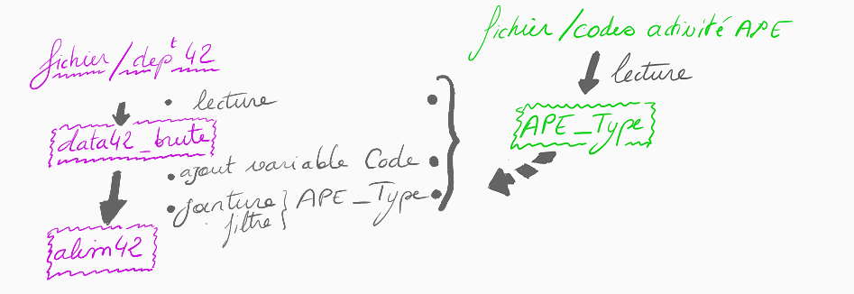
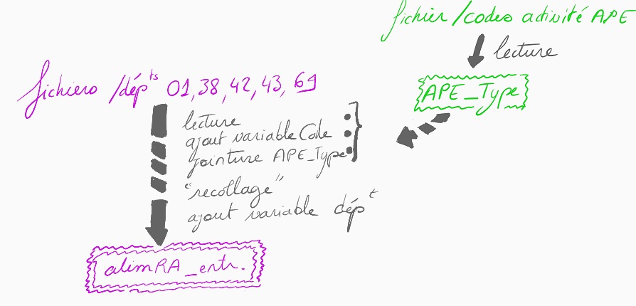
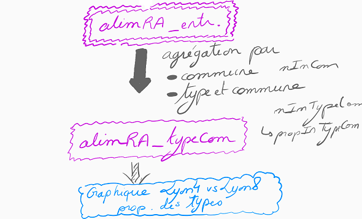
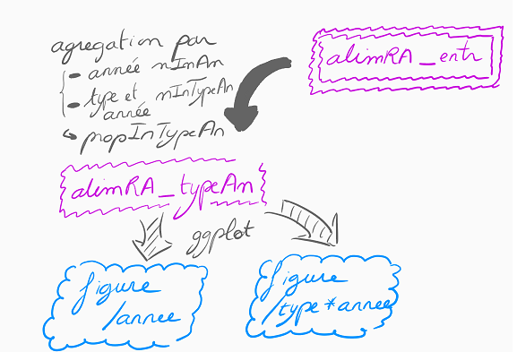
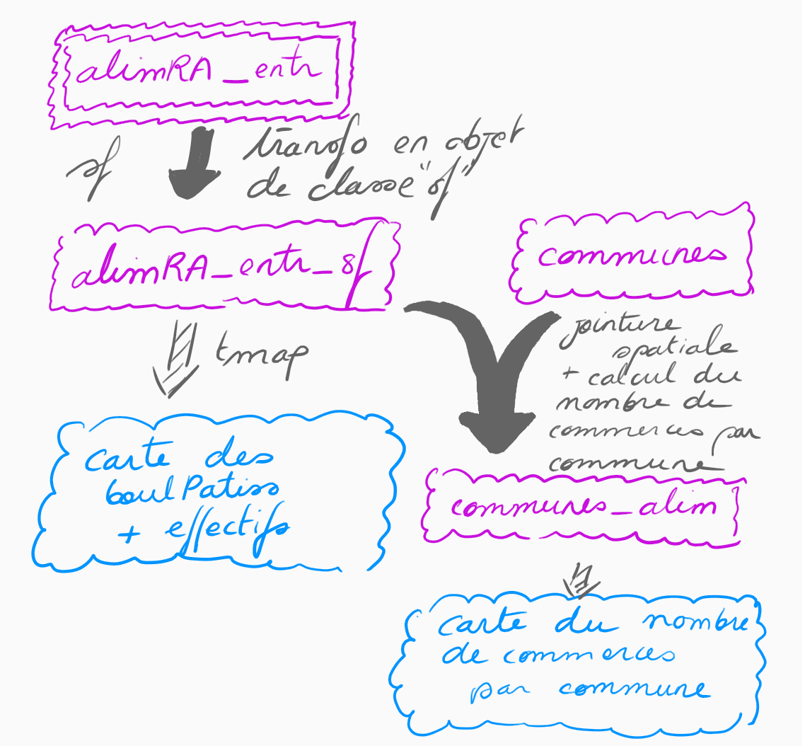

J’attends vos rendus le 20/11/2023. Les retards seront pénalisés (-2 points par semaine de retard)!
Vous pouvez me fournir un rendu par groupe
en m’indiquant (en quelques lignes) comment vous avez réparti les tâches et de quelle manière vous avez investi tel ou tel aspect
en m’indiquant si vous souhaitez avoir une note commune pour ce travail ou une note individuelle
Il faudra donc a minima que vous atteigniez un consensus sur cette partie “qui a fait quoi”, et s’il y en a ne serait-ce qu’un seul qui souhaite la notation individualisée dans le groupe alors c’est son avis qui prévaudra! (Oui c’est un peu compliqué: l’idée, comme vous l’aurez sans doute compris, c’est que personne ne se laisse passivement porter par les autres dans les groupes…)
J’attends que vous me fournissiez à la fois:
le document Rmarkdown (qui, de fait, me permettra de voir l’intégralité des lignes de commande que vous aurez écrit)
le rapport “tricoté” (i.e. le fichier .doc, .html, ou .pdf selon vos préférences).
De ce fait, vous pouvez, si vous le souhaitez, ne pas me montrer les lignes de commandes dans le rapport pour faire “comme si” j’étais un interlocuteur qui ne connaît pas le langage et s’intéresse juste aux résultats…
Si vous me montrez des tableaux de données intermédiaires, essayez de me montrer seulement quelques lignes, ou leurs dimensions, pas des tableaux énormes qui vont générer 10 pages de rapport pour pas grand chose…
Enfin, ne soyez pas trop scolaires… Prenez cet exercice comme une “simulation” de rapport qu’on vous demanderait de produire dans le cadre d’un stage ou de votre travail… Je veux dire par là que vous avez le droit d’utiliser des fonctions autres que celles que je vous ai montrées, de faire des choses en plus par rapport à ce que je vous demande (pas en moins SVP :-p ), d’organiser le rapport pour que la progression soit la plus logique possible, etc. La description étape par étape que je vous indique n’est en effet là que pour vous aider dans votre progression (et pour assurer que vous révisiez bien différents aspects abordés dans le cours…), pas pour brimer votre imagination…
Vous allez travailler sur des données de la base Sirene de l’INSEE, mise à disposition sur data.gouv.fr, et qui répertorie l’ensemble des entreprises et établissements actifs en France. Les métadonnées associées à cette base sont en partie décrites dans ce tableau.
Mise en place

Installations, téléchargements, premiers tests sur le département 42
Si besoin, installez R et RStudio
Téléchargez les données du département 42, geo_siret_42.csvdans ce répertoire
Téléchargez la table qui renseigne les codes correspondant à l’Activité Principale de l’Etablissement (APE)APE_Type.csv
Lecture de tableaux de données
Depuis RStudio, créez un projet qui comprendra l’ensemble des données et documents nécessaires à réaliser l’ensemble des traitements qui vous seront demandés pour ce TP.
Créez le data.framedata42 en lisant la table geo-siret_42.csv.
Créez l’objet APE_Type en lisant le fichier relatif aux codes d’APE.
Code et types d’activités => commerces alimentaires
Combien d’entreprises ont un nom (enseigne1Etablissement) qui comprend le terme “BOULANGERIE”?
Ajoutez une variable Code à votre table en ne conservant que les quatre premiers caractères de la variable activitePrincipaleEtablissement (cela correspond à un pattern “^….”, à savoir le début de chaîne de caractère suivi de quatre caractères quelconques -cf ce billet de blog sur les expressions régulières-).
Filtrez les lignes de data42 pour ne retenir que celles pour lesquelles l’APE correspond aux commerces “alimentaires” -alimentation, boisson, restaurant, bar- (voir la liste contenue dans le fichier APE_Type)
Stockez le résultat de ces opérations dans un objet alim42.
👁 Allez jeter un coup d’oeil ici pour comprendre comment le principe et la réalisation des jointures à l’aide du package dplyr.Réalisez une jointure entre data42_alim (variable codeAPE) et APE_Type (variable Code), de manière à compléter alim42 avec les types de commerces (variables Type et TypeAbreg).
Résumé, classement
Quelles sont les 3 communes de votre base de données qui comptent le plus de magasins alimentaires?
Pour les communes qui ne comptent qu’un seul commerce “alimentaire”, de quel type est-il, le plus fréquemment?
Quelles communes de plus de 100 commerces comptent au moins 10 commerces de type “viande”?
Rapport, statistiques descriptives
A ce stade, votre script commence à être un peu long et (peut-être) un peu désordonné… Ne serait-ce pas plus agréable de continuer votre projet sous la forme d’un rapport Rmarkdown? (Ne répondez pas à cette question, elle est rhétorique…).
Créez un document ____.Rmd, structurez-le avec quelques titres, et répartissez les différents morceaux de code de votre script de manière pertinente dans différents chunks.
Vous pouvez maintenant rédiger des paragraphes en y intégrant des éléments de réponses aux questions posées précédemment. Rédigez un petit paragraphe pour nommer les 3 communes qui comptent le plus d’entreprises (exercice précédent) en utilisant l’insertion d’“inline chunks”.
A partir de maintenant, votre document de travail sera un document`___.Rmd’ et non le script que vous avez créé initialement…
Programmation: automatisation pour plusieurs départements

Fonction
Pour obtenir la table alim42, vous avez réalisé un certain nombre d’opérations. On voudrait réaliser l’ensemble de ces opérations pour les 5 départements suivants:
l’Ain (01)
l’Isère (38)
la Loire (42)
la Haute-Loire (43)
le Rhône (69)
Réutilisez les commandes que vous avez mises au point sur data42 pour écrire une fonctionget_clean_data() qui réalisera l’ensemble de ces opérations sur le département de votre choix. L’input correspondra à un numéro de département (c’est-à-dire que vous pourrez utiliser la fonction en faisant, par exemple get_clean_data("01")).
💬 Pour lire le fichier, il faudra indiquer son chemin… Pensez à réutiliser ce que vous venez d’apprendre sur les chaînes de caractères pour reformer le chemin du fichier que vous intéresse à partir du numéro de département…
Certaines chaînes de caractère sont interprétées comme des chaînes de caractère pour certains jeux de données (par exemple pour les codes postaux de l’Ain, à cause du “0” en début de chaîne) tandis qu’elle est interprétée comme un numérique pour les autres jeux de données. Faites en sorte que votre fonction transforme bien cette variable pour qu’elles soient toujours de classe “character” en sortie (conversion par as.character()…).
Itération
Appelez cette fonction de manière itérative pour chacun des départements cités ci-dessus. Vous pouvez pour ce faire soit écrire une boucle for, soit utiliser la fonction map() du package purrr.
A partir des 5 jeux de données obtenus vous créerez un seul et même jeu de données alimRA_entr (données pour l’ancienne région Rhône-Alpes, où 1 ligne=1 entreprise).
💬 Vous pourrez si vous le souhaitez vous servir de la commande bind_rows().
Rajoutez une variable departement (correspondant au numéro de département) à votre jeu de données alimRA_entr. Peut-être par des manipulations sur le code postal?…
If et écriture de fichier
Vous avez dû remarquer que l’exécution de l’étape précédente prenait un peu de temps car les 5 fichiers geo-sirene lus sont très volumineux… En revanche la table alimRA_entr est de taille beaucoup plus raisonnable. Or, nous n’aurons besoin que de cette table pour la suite du projet. Pour éviter d’exécuter cette étape chronophage à chaque fois que vous travaillerez sur ce projet:
exportezalimRA_entr dans un fichier alimRA_entr.csv.
entourez la boucle for d’une structure conditionnelle if de sorte que la boucle ne soit exécutée que si le fichier alimRA_entr.csv n’existe pas (voir fonction file.exists()…)
écrivez à la suite la commande qui servira à lire alimRA_entr.csv à chaque “tricotage” de votre rapport Rmarkdown.
Résumé par commune et type de commerce

Agrégation des données par commune et type de commerce
Agrégez la table alimRA_entr par commune et type de commerce, pour créer une table alimRA_typeCom(où une ligne correspondra à un type de commerce pour une commune):
une variable nInCom correspondant au nombre de commerces par commune
une variable nInTypeCom correspondant au nombre de commerces par type et commune
une variable propInTypeCom correspondant à la proportion d’un type de commerce dans une commune
Quelles communes comptant plus de 100 commerces comptes au moins 5% de commerces de type “viande”?
Graphique
Réalisez un graphique montrant les proportions des différents types de commerces pour LYON 4EME et LYON 8EME.
Evolution dans le temps des créations d’entreprise

Manipuler des dates avec lubridate
Nous allons nous intéresser aux dates de création des entreprises de notre base alimRA_entr (variable dateCreationEtablissement).
💬 Pour le moment, dateCreationEtablissement est considéré comme une variable de type “chaîne de caractères”. Pour faire comprendre à R qu’il s’agit en réalité d’une date (et lui faire comprendre comment elle est mise en forme) nous allons faire appel au package lubridate.
👁 Consultez ce billet de blog ou la vignette du package lubridate, qui explique succintement comment utiliser ce package.
Installez et chargez le package lubridate.
Transformez le tableau alimRA_entr en modifiant la classe de dateCreationEtablissement à l’aide d’une fonction de lubridate.
Ajoutez une variable annee au tableau alimRA_entr à l’aide, à nouveau, d’une des fonctions de lubridate.
Résumé, filtre
Créez une table alimRA_typeAn qui recense le **nombre d’entreprises par année (nInAn), et par type*année (nInTypeAn)**.
Filtrez les données de alimRA_typeAn pour ne garder que les entreprises dont la création correspond aux années >=1970.
Graphiques: évolution du nombre d’entreprises au cours du temps
Installez et chargez le package ggplot2
Réalisez un graphique représentant l’évolution des proportions d’entreprises (par type) par année.
Réalisez ce même graphique, mais en représentant le nombre de créations d’entreprises par année et par type, pour les 5 types comptant le plus de créations d’entreprises (au total).
Cartes

Carte des boulangeries-pâtisseries
Repartez de la table alim_entr pour en faire un objet de classe “sf”. Vous vous servirez pour cela des colonnes “longitude” et “latitude” et exclurez les entreprises pour lesquelles ces colonnes ne sont pas renseignées.
Réalisez une carte montrant le semis de points correspondant aux boulangeries-pâtisseries.
Essayez de représenter à travers cette carte l’année de création de l’entreprise (de la manière qui vous semblera la plus pertinente).
Carte des proportions de commerce par commune
Téléchargez le shapefile des limites de communes en France ici et filtrez pour ne garder que les départements considérés ci-dessus.
Joignez aux communes les informations concernant les commerces (st_join()…) et calculez le nombre de commerces par commune.
Produisez une carte montrant le nombre de commerces par commune. Vous aurez sans doute à retravailler l’échelle colorée…